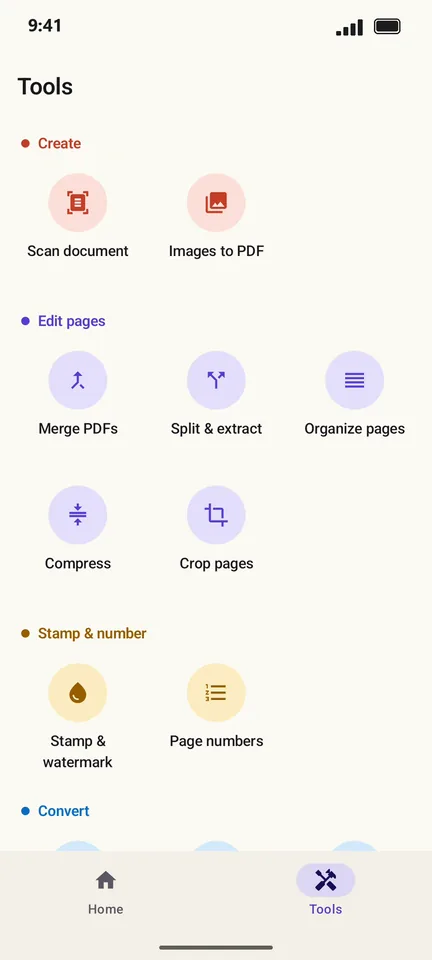
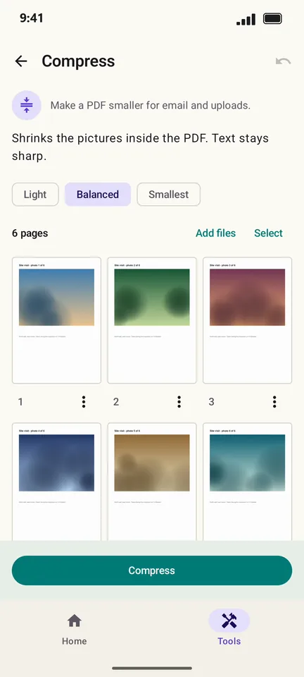
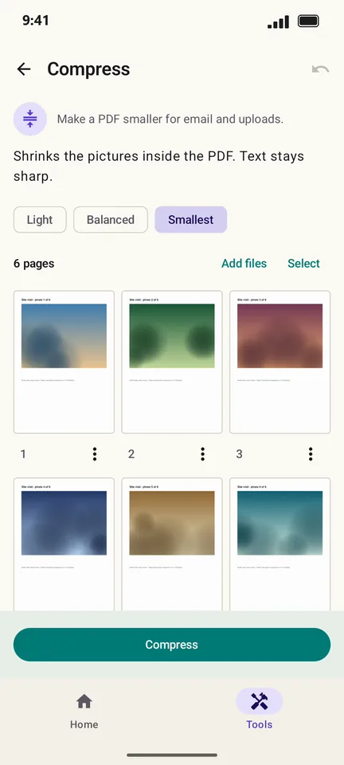
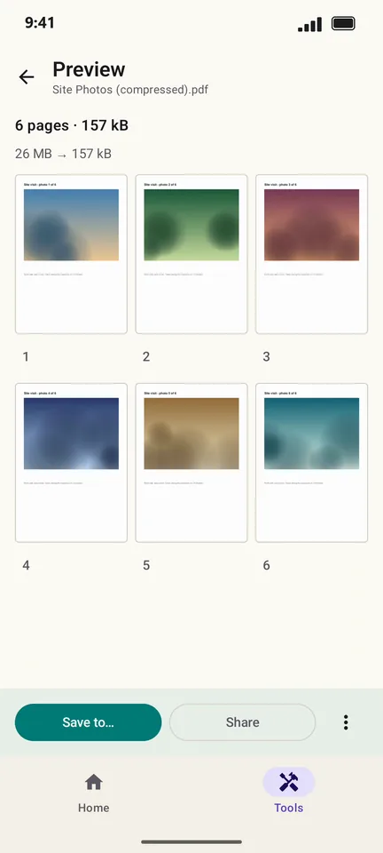

How to compress a PDF on Android
"File too large" is the classic upload error, usually caused by photos inside the PDF. PageCat shrinks those pictures while keeping text sharp. In this example a 26 MB PDF of site photos went down to 157 kB.
Steps
Open the Tools tab.

Tap Compress and pick your PDF.

Choose a level: Light, Balanced or Smallest.

Tap Compress. The result shows the old and new size side by side.

Tap Save to… or Share.
Good to know
- Start with Balanced. Use Smallest when a form has a strict size limit (often 1–2 MB).
- Compress shrinks pictures. A PDF that is only text is usually small already and will not get much smaller.
Questions
Will compressing make my PDF blurry?
Text stays sharp because only the pictures are shrunk. On Smallest, photos lose some detail; try Balanced if they look too soft.
Is my PDF uploaded to a server to compress it?
No. PageCat compresses on your phone, so it also works without internet.